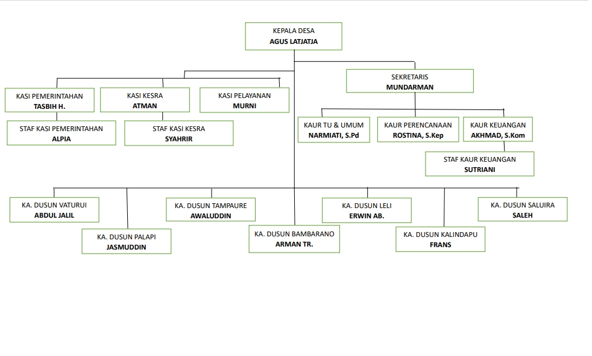

Struktur Desa
| No | Nama | Jabatan |
|---|---|---|
| 1 | Agus Latjatja | Kepala Desa |
| 2 | Mundarman | Sekretaris |
| 3 | Narmiati, S.Pd | Kaur TU & Umum |
| 4 | Magfira | Staff Kaur TU & Umum |
| 5 | Ayu Puspita Rahman | Kaur Perencanaan |
| 6 | Rostina, S,Kep | Staff Kaur Perencanaan |
| 7 | Akhmad, S.Kom | Kaur Keuangan |
| 8 | Sutriani | Staff Kaur Keuangan |
| 9 | Tasbih H | Kasi Pemerintahan |
| 10 | Alpia | Staff Kasi Pemerintahan |
| 11 | Kasi Kesra | Atman |
| 12 | Atman | Staff Kasi Kesra |
| 13 | Murni | Kasi Pelayanan |
| 14 | Abdul Jalil | Kepala Dusun Vaturui |
| 15 | Jasmuddin | Kepala Dusun Palapi |
| 16 | Awaluddin | Kepala Dusun Tampaure |
| 17 | Arman Tr | Kepala Dusun Bambarano |
| 18 | Erwin Ab | Kepala Dusun Leli |
| 19 | Frans | Kepala Dusun Kalindapu |
| 20 | Saleh | Kepala Dusun Saluira |